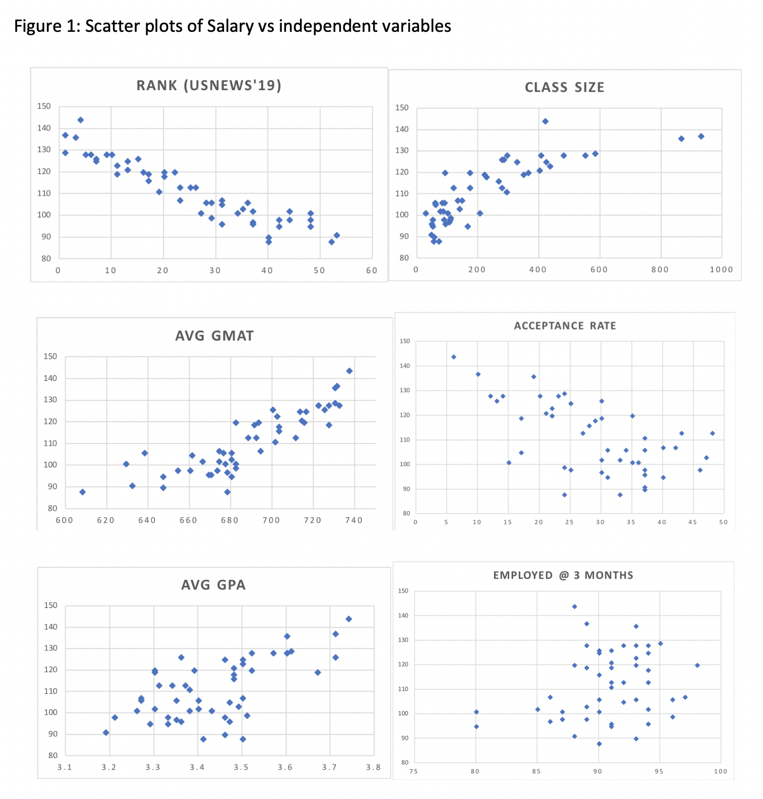
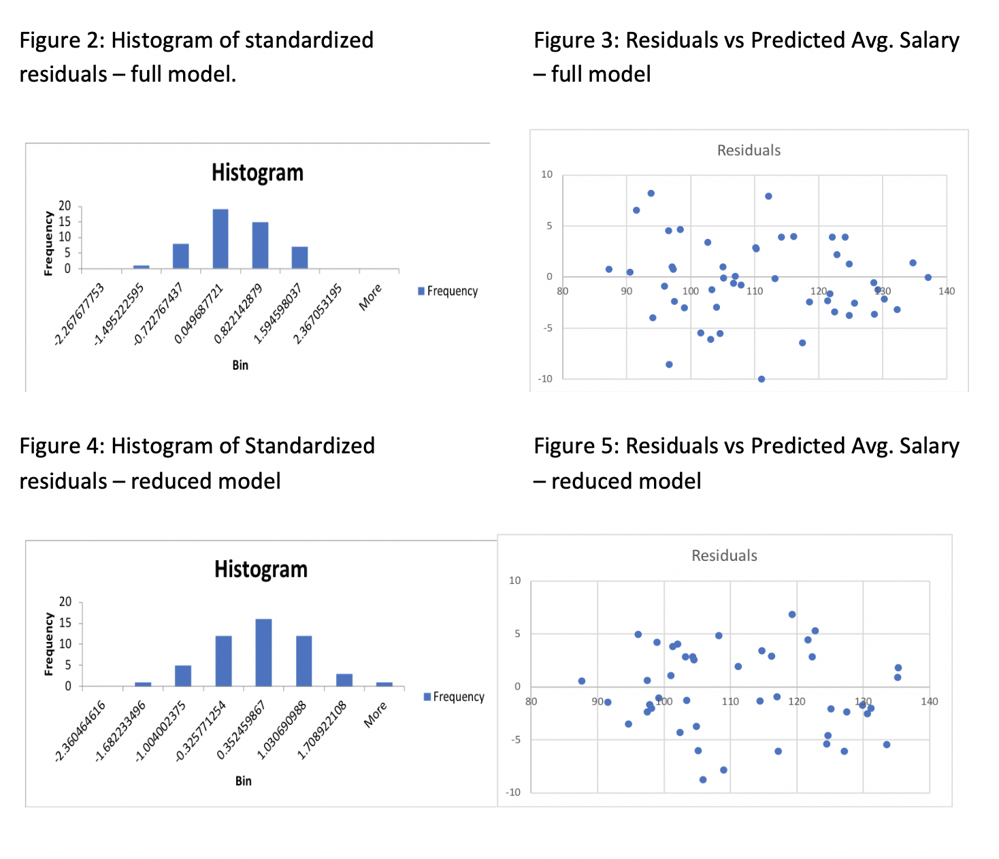
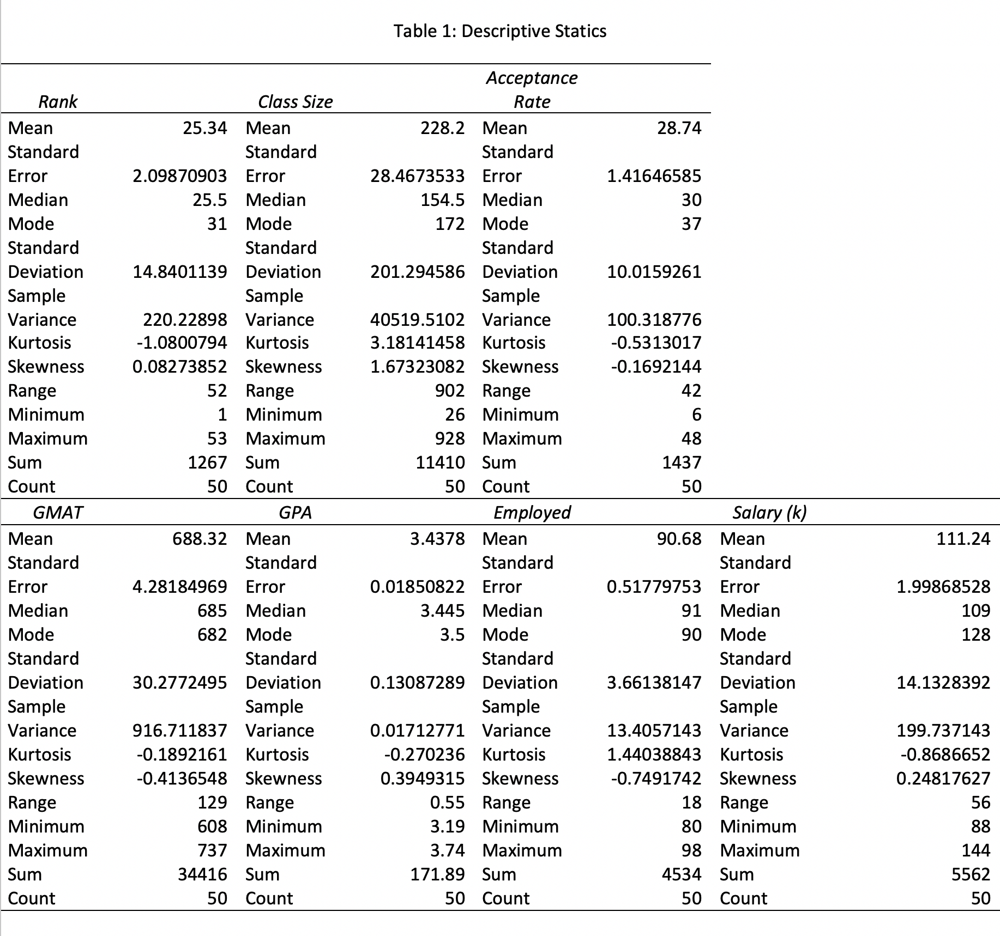
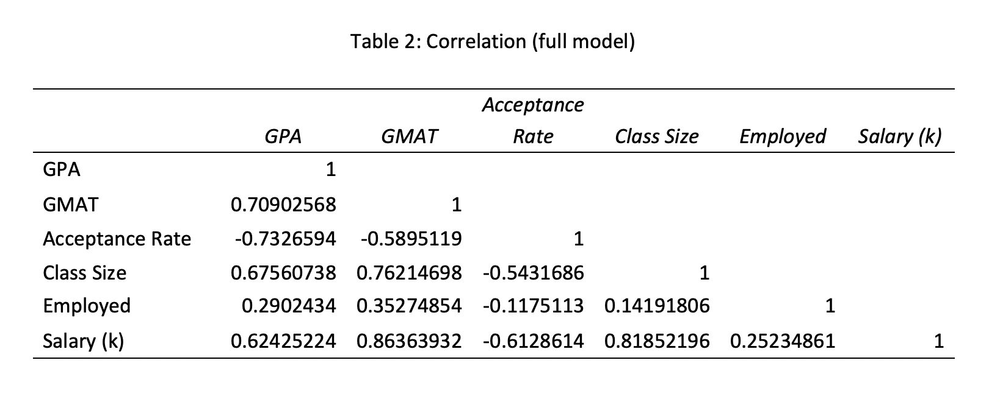
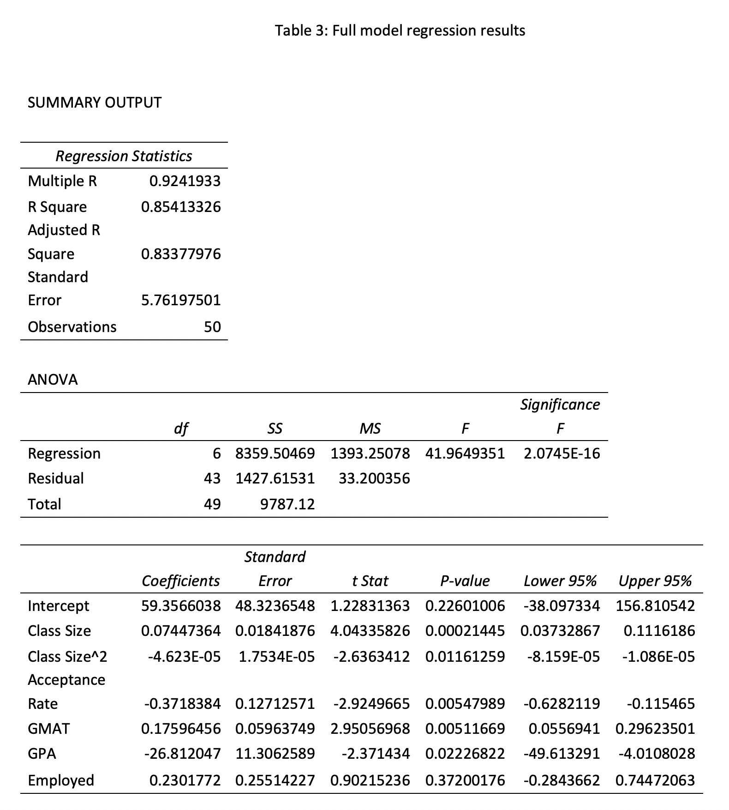
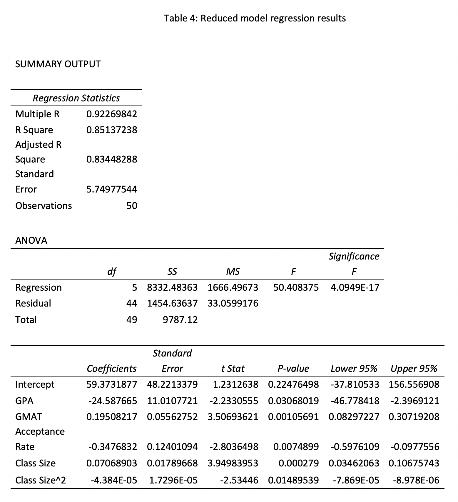
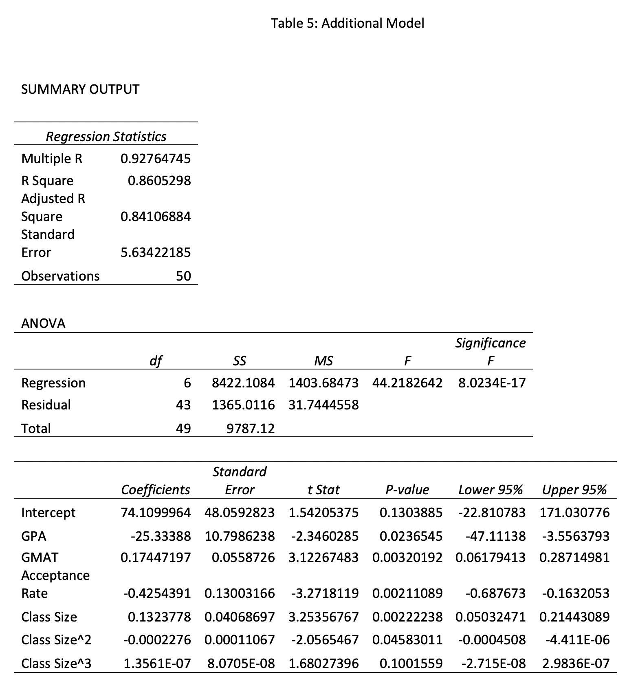

The effect of MBA statistics on salaries in the United States
personal project


1. Introduction
Nowadays, to let employees have better understanding of certain fields, some companies send their employees to take MBA programs.
Taking MBA programs increasing the salary is also one of important factors of people going back to universities to get MBA degrees after working for several years.
As we all know, different MBA programs provided by different universities will cause different average salaries after people graduate from universities.
In this study, I want to examine the main factors of average salaries after taking MBA programs, which is measured by thousand dollars.
Using the data provided by gmatclub, I choose 50 universities and create a regression model of several significant factors in MBA programs.
I am pretty sure the ranking of the university will influence salaries. But I am interested in what other factors will influence salaries,
so that I don’t contain rank as independent variable in this project.
To evaluate the influence factors of salaries after taking MBA programs, I use the data of the ranking of US business school in 2019, which is provided by gmatclub.
I restrict the sample to 50 universities and run a multiple regression against the average salaries to see the influence of multiple independent variables on the dependent variable.
I can also figure out which independent variable is the most influential variable by utilizing the multiple regression.
After analyzing the full model, I reduced unrelated independent variables and figured out a better relationship between each independent variables and dependent variable (linear, quadratic or cubic) to create a better model,
and proved the reduced model satisfy all assumptions, which are normality of errors, homoscedasticity, non-autocorrelations, no unnecessary outliers and no serious multicollinearity.
In addition, I used histograms and scatter plots of residuals to show no need to add a trend variable and transform my dependent variable.
The result of my multiple regression of the reduced model proves my conjecture is correct to some extends.
Base on the data of my multiple regression model, I can make conclusion that increasing 1 point average GPA score cause the average salary decreasing 24.59 thousand dollars.
Increasing 1 point average GMAT score cause the average salary increasing 0.195 thousand dollars. Increasing 1 percent acceptance rate cause the average salary decreasing 0.35 thousand dollars.
The class size has negative quadratic regression relationship with the average salary. The smaller number of students in the classes, the more knowledge they can learn in the classes, and the higher salary they can get after graduate.
Even though I do not contain the independent variable ranking, it still follows my initial assumption, which is the ranking of the university will influence the average salary.
The higher the ranking is, the more money people graduate from the MBA could earn, because top universities usually have lower average GPA (courses in top universities are more difficult), higher average GMAT score,
lower acceptance rate and smaller class size than other universities (most of top universities are private schools).
2. Data Description
In this study, I use data about the ranking of US business school in 2019 from gmatclub website.
Since I want to figure out what factors influence salary after people graduate from MBA school, the dependent variable of my study is average salary (salary), which is measured by thousand dollars.
My independent variables are best business schools ranked in 2019 on US news (rank) and each schools’ average GPA score (GPA), average GMAT score (GMAT), acceptance rate,
class size and the percentage of students who are employed in three months after graduate (employed).
Table 1 displays descriptive statics for my sample, which is made up of data from 50 MBA schools. The average salary of all 50 MBA schools is 111.24 thousand dollars.
The minimum salary is 88 thousand dollars, and the maximum salary is 144 thousand dollars. In Figure 1, I show the scatter plots of salary against each independent variable.
I make assumptions about the relationship between the dependent variable and each independent variable and identify no severe outliers base on the scatter plots.
Before I ran the multiple regression for the data, I checked the correlation matrix for multicollinearity.
I found there was no absolute value of the correlation coefficient between each two independent variables were greater than 0.8, so there was no serious multicollinearity.
It can be seen in Table 2. After I ran the regression analysis, I found the p-value of Employed is higher than 0.05. I dropped this independent variable and ran the regression analysis again.
I found the R square is 0.8514, which is great. The significance F is 4.095E-17, which is great. And all p-values are smaller than 0.05, which are also great, so this is my final result.
3. Regression Analysis
In order to figure out the relationship between independent variables and average salary after people graduate from MBA schools,
I narrowed down my data to 50 universities, and set up an initial regression model:
Salary = β0 + β1*ClassSize + β2*ClassSize^2 + β3*AcceptanceRate + β4*GMAT + β5*GPA + β6*Employed + ε
I want to figure out what factors of MBA schools will influence salary as I mentioned above. I choose class size, acceptance rate, average GMAT score,
average GPA score and the percentage of students who are employed in three months as my independent variables because they are all essential parts of considering about MBA schools.
All these factors can affect the study quality of taking classes, and the study quality can influence their solving problem abilities after students get into work, then directly influence salary.
The results of the initial multiple regression model are showed in Table 3. Before I check the data of Table 3, I run the histogram and see if my model has normality of errors or outliers.
I also make a scatter of residuals vs predicted average salary to see if my model has constant variance of errors. According to Figure 2 and Figure 3,
I conclude that my initial model follows normality of errors assumption, no outlier assumption and homoscedasticity assumption. I run the correlation and the result of Table 2 shows there is no serious multicollinearity.
My model does not have time series so that there is no autocorrelation. Then I go to the Table 3 to check my data. The R square shows it is 85.4% data can be explained by this model, which is great.
The significant F is 2.075E-16, and it is smaller than 0.05, which is also great. However, not all independent variables’ p-values are smaller than 0.05. The p-value of Employed is 0.372, and it is greater than 0.05, which is bad.
Thus, I should get rid of the independent variable Employed, and run the reduced model again.
I get rid of the independent variable Employed and run the reduced model again. According to Figure 4, Figure 5 and Table 2, my reduced model satisfies all assumptions.
Then I go to Table 4 to check my data again. The R square shows 85.14% data can be explained by this model, which is great. The significant F is 4.09E-17, and it is smaller than 0.05, which is great.
All p-values of independent variables are smaller than 0.05 this time, which is great. I want to recheck if it is correct about getting rid of the independent variable Employed, so I compare the adjusted R square of full model and reduced model.
I find that the adjusted R square is 0.8338 in the full model, and it is 0.8345 in reduced model. The adjusted R square become bigger after I get rid of the independent variable Employed, which is great.
I do not calculate the partial F test, because I only get rid of one independent variable. I also run another regression model that the class size has cubic relationship with salary, and it shows in Table 5.
Because the p-value of cubic class size is greater than 0.05, the quadratic model is model is better than cubic model.
Since all assumptions are satisfied and all data are great in my reduced model, the reduced model is my final model. The model is defined as:
Salary = β0 + β1*ClassSize + β2*ClassSize^2 + β3*AcceptanceRate + β4*GMAT + β5*GPA + ε
4. Empirical Results
The coefficients in Table 4 suggest that increasing 1 point average GPA score cause the average salary decreasing 24.59 thousand dollars. It is a little bit wired. I think it is because courses are much more difficult in better MBA schools,
so that Top 10 MBA schools have lower GPA than MBA schools from 40 to 50. People who get into higher rank MBA school (the number of rank become lower) can earn more money after graduate, so that higher GPA decreases the salary.
Increasing average GMAT score by 1 point increases the average salary by 0.195 thousand dollars. Increasing acceptance rate by 1 percent decreases the average salary by 0.35 thousand dollars.
And the class size has negative quadratic regression relationship with the average salary. I think it is because most of top MBA schools are private schools, and private schools usually have small class size.
The results of this reduced model prove the fact that people who graduate from higher rank MBA schools will have higher salary, because higher rank MBA schools usually have lower GPA score, higher average GMAT score, smaller class size and lower acceptance rate.
I get all these results about GPA, GMAT, class size and acceptance rate in my reduced model.
5. Summary and Discussion
This study investigated influence factors about average salary of people who graduate from MBA schools. I figure out the relationship between salary and each independent variable.
I also examine the idea that graduate from higher rank MBA schools will have higher salary.
One short come of this study is my data only contains 50 MBA schools, and it is almost TOP 50. I should enlarge my data to get precise results of the relationship between the dependent variable and independent variables.
Furthermore, I think I can do some further studies after this one. I can do another regression model to compare the average salary before and after people get MBA degrees. Then I can see if it is worth for people to go to MBA schools.
I also can compare the average salary of people who finish the Master of Business Administration to other masters’ degrees to see difference of average salaries between different majors.






